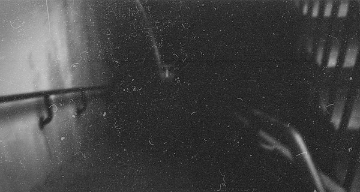

Под словом крипи чаще всего имеются в
виду страшные истории. Всё началось с так
называемых крипи-тредов на 4chan.org,
регулярно начавших появляться в
2006 году и почти полностью состоящих
из таких историй. Как и многие другие
замечательные вещи, эта традиция была
скопирована на первую российскую
имиджборду 2ch.ru практически без
изменений. С тех пор традиция
расползлась далеко за пределы
имиджборд, а слово крипи
стало в некоем роде собирательным
определением таких понятий,
как страшный рассказ, крипипаста
,страшная картинка, хоррор или
просто жуткая ситуация из жизни.
Итак, мы занимаемся крипи.
Зеркало
Иногда отражение в зеркале более реально, чем сам объект
кто на свете всех милее...
Все началось снова
Вернувшись домой с работы,
Джордж обнаружил, что ужин ещё не приготовлен.
Он поднялся на второй этаж в спальню и увидел,
что жена сидит на табурете перед
трюмо, почти касаясь зеркала лицом.
Гейб, их годовалый сын, лежал в
своей кроватке, время от времени
смешно надувая во сне щечки.
Ох, чёрт возьми, — в панике подумал Джордж.
— Анна?
Жена вздрогнула и посмотрела на него.
Ещё секунду её взгляд оставался остекленевшим,
а потом пустое выражение на лице сменилось
смущением:
— А, это ты… Извини, не заметила, что ты вернулся
.
— Конечно, не заметила
,
— Джордж присел на край кровати.
— Анна, ну что ты делаешь?
— Просто сижу. Отдыхаю.
— Отдыхаешь? Перед зеркалом?
Знаешь, в нашем доме полно других
мест, которые лучше подходят для отдыха.
— Ну…
— она запнулась, нервно заламывая пальцы.
—Понимаешь, тут Гейб рядом,
можно заодно за ним присматривать,
не беспокоиться за него…
— Врушка из тебя никакая
,
— Джордж покачал головой.
—Анна, так не годится. Ты опять
взялась за своё, верно?
Она вскочила и выбежала из
комнаты. Джордж с кислой миной
посмотрел вслед жене, потом встал,
подошёл к кроватке и поцеловал
спящего сына в лоб.
— Ну что нам поделать с твоей мамой?
— прошептал он.
Обещание
Ели в этот вечер поздно. Гейб к тому времени
уже проснулся и за столом веселился вовсю,
выдувая суп себе на штанишки из подносимой
матерью ложки. Анна была необычно тихой и
суетливой, будто куда-то спешила.
В сторону мужа она старалась лишний
раз не смотреть.
—Дорогая,
— не выдержал наконец Джордж,
— ты уверена, что нам не стоит снова
обратиться врачам.В прошлый раз
они помогли.
Она молчала, вытирая пальцем суп
с краешков губ Гейба.
—Я просто беспокоюсь за тебя.
Знаешь, то, что ты делаешь — это
нездорово, странно. Ты ведь это
понимаешь?
Она кивнула, по-прежнему отводя взгляд,
и взялась за чай.
Пальцы у неё дрожали.
— Ну так прекращай.
Анна замерла с чашкой у рта, будто
о чём-то напряжённо размышляя,
потом вернула её на стол, так и не сделав
глоток. Она посмотрела
на мужа, и в её глазах заблестели слезинки:
— Я не могу.
Джордж вздохнул:
— Наверное, мне нужно снова
вынести из дома все зеркала.
— Нет!
— воскликнула она.
— Не надо. Я справлюсь, вот увидишь.
Обещаю.
—В прошлый раз ты сама не справилась.
Но ведь я уже излечилась.
А сегодня… просто… случайно вышло.
Сама сдуру слишком
долго расчесывала волосы утром, вот и…
— Ну хорошо,
— мягко сказал Джордж.
— Ты девочка сильная, я в тебя
верю. Но если ещё раз увижу
тебя прилипшей к зеркалу,
тут уж всё — будет тебе
доктор, и зеркала вмиг уберу.
Конечно,
— Анна улыбнулась, но Джордж видел, что улыбка
далека от непринуждённой...
место для рекламы.звоните: 8-800-555-35-35
Веерное отключение
В темноте все цвета одинаковы
темной-темной ночью в темном-темном доме...
Один дома
Потихоньку темнело, и
буквы на серой газетной
бумаге становилось все
труднее различать. Они будто бы
оставались на своих местах, вроде
даже сохраняли привычные формы,
но вот смысл ухватить было, чем дальше,
тем сложнее. А если, как
заметил Женька, остановиться на
какой-нибудь одной букве и смотреть на
нее, то остальные через некоторое
время начинали словно
подмигивать,
мельтешить, роиться, и, если
после полуминуты такого
дела сдвинуть глаза в сторону, можно
было прочитать что-то совсем
другое, не то,
что напечатано.Темнело, и буквы
на серой газетной бумаге
становилось все труднее различать.
Они будто бы оставались на своих местах,
вроде даже сохраняли
привычные формы,
но вот смысл ухватить было, чем дальше, тем
сложнее. А если, как
заметил Женька, остановиться
на какой-нибудь одной букве и
смотреть на нее, то остальные
через некоторое время
начинали словно подмигивать,
мельтешить,
роиться, и, если
после полуминуты такого дела
сдвинуть глаза в сторону, можно
было прочитать что-то совсем
другое, не то, что напечатано.
Поразвлекавшись таким образом минут пять,
Женька почувствовал, что глаза заболели.
В комнате медленно, неспешно становилось
темно. Окна зала выходили на запад, но солнце
уже опустилось за горизонт, а вернее, за гаражи.
Он отложил районку и просто сидел в кресле,
в ленивом оцепенении, свернувшись и
подтянув коленки. Один раз снова взял газету,
чтобы посмотреть, на что похожи теперь буквы, но,
как ни напрягал глаза, не смог прочитать больше одного
слова. Фотографии, и так плохого
качества, в темноте совсем расплылись,
лица превратились в белые пятна с черными
впадинами глаз и ртов.
Вокруг них громоздилась
тьма, ранее бывшая фоном: унылыми кабинетами,
портьерами, кронами
деревьев. Дурацкий цветок над головой
библиотекарши утонул в
черном, став похожим на тонкую черту.
Женька вдруг подумал,
что он напоминает веревку,
тянущуюся вверх от шеи, от равнодушного
белого лица. Вообще все
лица стали непривычными, в них
проглядывала не то недовольная
отрешенность, не то насмешливое упрямство.
Словно все эти люди
думали о чем-то недобром. Не тогда,
когда их фотографировали.
Теперь.
Побаиваясь, что он увидит что-нибудь
похуже, Женька торопливо
сложил газету и кинул на диван.
Сумерки играли с глазами злые
шутки. Пока те успевали привыкнуть к
уровню гаснущего света,
становилось еще темнее, и разум,
проигрывая тьме в скорости,
старался сам дорисовать
недополученное. Получалось не
очень здорово.
Женька, присидевшись, ленился встать,
пусть даже
хотелось чаю. Но для этого надо было идти
на кухню ставить чайник,
а значит – распрямлять ноги, отклеиваться
от теплой спинки уютного
кресла, шевелить руками. Не хотелось
совсем. Хотелось сидеть вот
так, и Женька подумал, что это даже
неплохо – отключение. Сейчас
он смотрел бы телевизор, как в сотни
других одинаковых вечеров, а
так – просто отдыхает.
Веерные отключения приходились
на их дома
три раза в неделю. Иногда чаще. Их домами
Женька называл две
пятиэтажки, жмущиеся друг к
другу углами: ту, где
жил он, и соседскую, во двор которой бегал
гулять и где через
забор можно было пролезть на
территорию почты.

КТО НАХОДИТСЯ ЗА ДВЕРЬЮ ?
Вообще, сейчас почему-то всякие
такие воспоминания полезли одно
за другим. Наверное, расплывчатые лица
с фотографий в районной
газете что-то такое навеяли в
сумерках. Они и тишина.
Вот, например, Юрка Билин рассказывал,
что знал одного пропавшего
пацана, звали его Славка. Было как раз
отключение, кто-то ходил
по подъезду, стучал в двери.
Юркины родители даже не подумали
открывать. А утром оказалось, что Славка пропал,
он жил этажом
выше вдвоем с отцом, отец в ночную работал.
Дверь была закрыта,
снаружи. Значит, Славка куда-то вышел,
запер за собой дверь и
пропал.
Так что, когда недавно какая-то толстая
тетка попросила показать
дорогу через соседние дворы, он
сказал, что не отсюда, не знает
дороги, и убежал.
Город слишком часто погружался в
темноту, а когда она отступала,
как отлив, то, бывало, уносила с собой
кого-то из жителей. Чтоб
тебе жить во время перемен, процитировал
когда-то папа старинное
китайское проклятие. Женька понимал, что
живет во время перемен.
Это не слишком его волновало, но осторожность
он соблюдал.
Свет вроде бы скоро должны были дать.
Хотя график выдерживали
постольку-поскольку, но Женька надеялся,
что сегодня включат
вовремя. Ему никак не хотелось сидеть в
темноте до ночи одному –
папа был в Горьком на заработках, мама
уехала в Переполье сегодня
утром: у маминой двоюродной сестры, тети Лены,
недавно родился
ребенок, и они с мужем всех приглашали.
Женьке новорожденный тоже
приходился какой-то родней, но он не стал
сильно в этом
разбираться, тетю Лену знал плохо и в
Переполье не захотел. Тем
более что в автобусах его всегда укачивало,
а пилить два часа
туда и завтра два часа обратно, вместо того
чтоб спокойно
выспаться в субботу, тоже ему никак не хотелось.
А тем временем темнело. Темнело небо
за окном, темнота сгущалась
в углах комнаты, потихоньку
разливалась по стенам, перекрашивая
их на свой лад, стояла в дверном проеме
спальни, а в самой
спальне было уже совсем темно – длинная и
узкая, с одним
выходящим на восток окном, она полностью
утонула в синих тенях, и
там ничего уже не было видно. Так что получалось
представить
вместо нее любую другую комнату, как
Женька иногда любил делать,
фантазируя, что у них свой дом или они
разбогатели – неважно как
– и купили квартиру соседей,
расширив свою, или еще что-нибудь.
Но сейчас почему-то представлялось совсем
другое: какой-то сырой
бетон, арматура, как в недостроенном
банно-прачечном комбинате за
соседним домом, куда они иногда лазили
гулять. Так что Женька
перестал об этом думать и размышлял просто о
темноте.